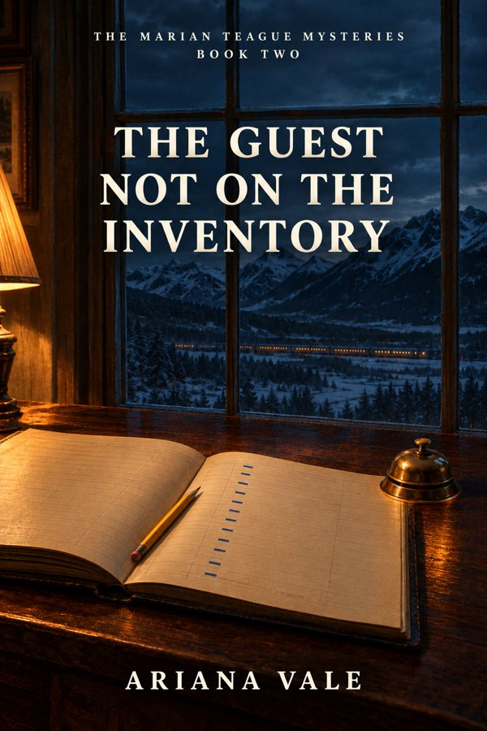
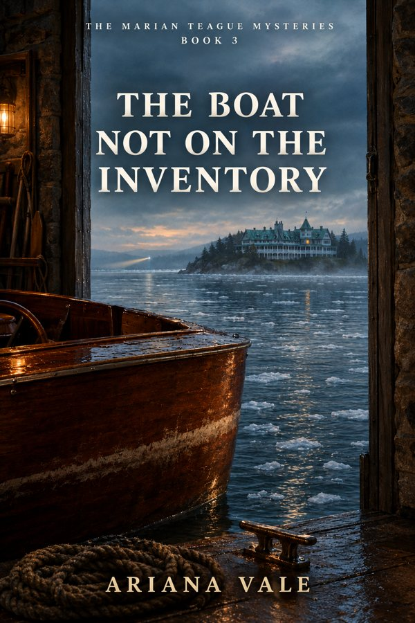
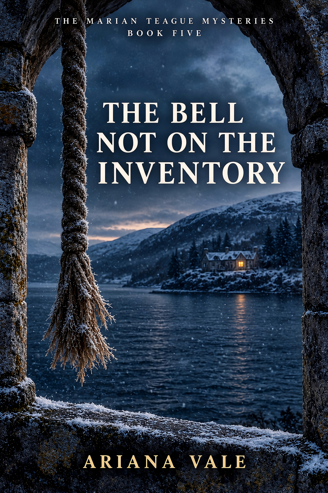
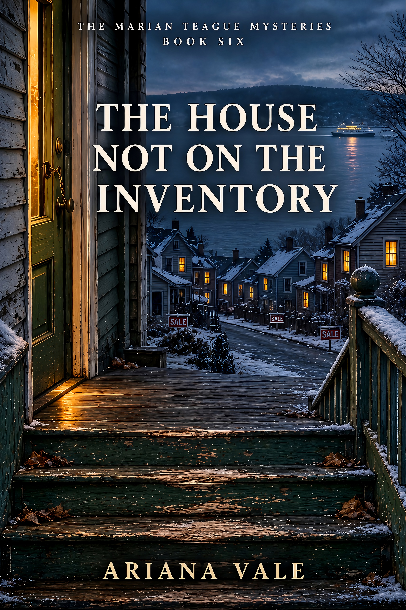

Book One
The Room Not on the Inventory
Tolt Head Light Inn, Newfoundland
A cart wheel rolls along an empty corridor every night at the same minute. Marian measures the corridor and finds it is too short.
View on AmazonThe Marian Teague Mysteries · Complete in six books
Marian Teague has no supernatural gift. She counts the rooms, the linen and the keys, and the buildings do the haunting.
The series
The housekeeper who counts what others overlook.
Marian spent twenty years as head of housekeeping at a grand hotel, until the hotel was sold and her job went with it. Now she takes the work nobody else wants: minding closed properties through the winter, when the guests are gone and the road may not stay open.
She knows when a bed has been turned down by someone who is not there. The buildings carry the strangeness. Marian does the proving, with measurements, paper, and the testimony of people who have waited years to be asked.
Every case closes with evidence, never a vision.
Read them in order
Every case closes within its own book. The thread that runs through all six is best followed from the start, at Tolt Head.
Book One
Tolt Head Light Inn, Newfoundland
A cart wheel rolls along an empty corridor every night at the same minute. Marian measures the corridor and finds it is too short.
View on Amazon
Book Two
Cairn Lodge, Canadian Rockies
A wing has been locked since spring, and the register holds the name of a winter guest nobody saw.
View on Amazon
Book Three
Pellam Island House, Lake Superior
An island hotel waits out the ice, and a wet boat sits in the boathouse where nothing should have moved.
View on AmazonBook Four
Domaine des Érables, Quebec
A former sanatorium turned retreat stands empty before the first blizzard, with frost on the cure porch and a resident gone.
View on Amazon
Book Five
Glen Corrach, Scottish Highlands
The chapel bell has had no rope for decades. In a lodge cut off by weather, someone is ringing it.
View on Amazon
Book Six · The finale
Kestrel Street, Dartmouth, Nova Scotia
Marian goes home to her late mother’s house, a key, and the last inventory Louise Teague left unfinished.
View on AmazonSix places
More from Ariana Vale
A conservator in the Georgia lowcountry reads the feeling behind old handwriting, and finds the stories someone tried to erase. Three books, complete.
An archaeologist surveys ground before it is built on, and the ground has been keeping its own records. Five books, complete.
A tracker in a small New Mexico county follows what the land remembers, one careful step at a time. Five books, complete.
Four women arrive separately on the same stretch of Scottish coastline, each carrying a gift she has spent years treating as a liability.
A community of women gathers around a seven-hundred-year-old peat bog on the North York Moors, each arriving with a gift she has been managing as a problem.
Fired at forty-two and newly divorced, Elena Blackwood discovers that twenty years of legal expertise can rewrite reality.
Newsletter
New releases, notes from behind the books, and occasional writing from Ariana Vale, delivered by Substack.
Read & subscribe on SubstackThe author
Ariana Vale writes literary paranormal women’s fiction about women over forty, overlooked work, unusual gifts, and the relief of being accurately perceived.
Her newest series, The Marian Teague Mysteries, follows a former hotel head of housekeeping who takes winter work minding closed properties, a different place in each of six books, from a lighthouse inn in Newfoundland to her late mother’s house in Dartmouth, Nova Scotia. She has no supernatural gift. The buildings carry the strangeness, and every case is closed with evidence, not visions.
Earlier series include The Saltmarsh Witnesses, set on the Scottish coast; The Ashveil Mere Series, set on the North York Moors; and her debut, The Weave Arbiter Trilogy, in which a fired lawyer finds that twenty years of legal expertise can rewrite reality.
Vale is interested in the kind of knowledge that cannot be explained in professional contexts, and the weight of a true thing finally being named.